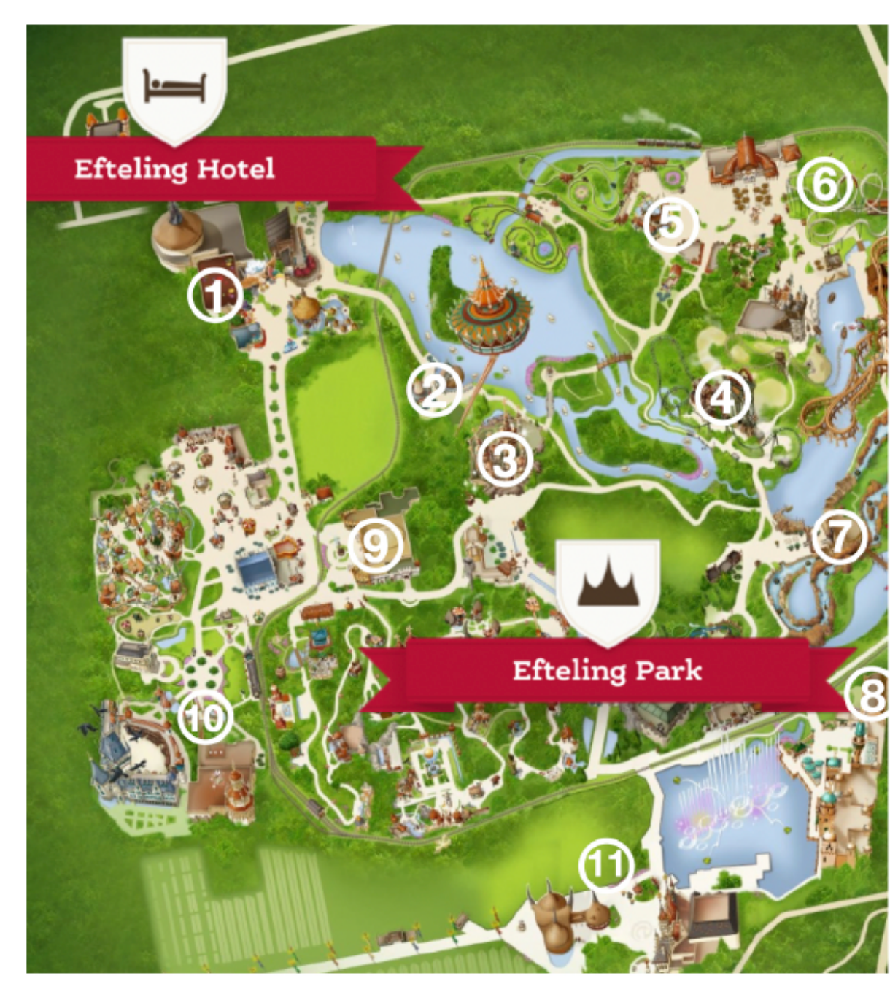
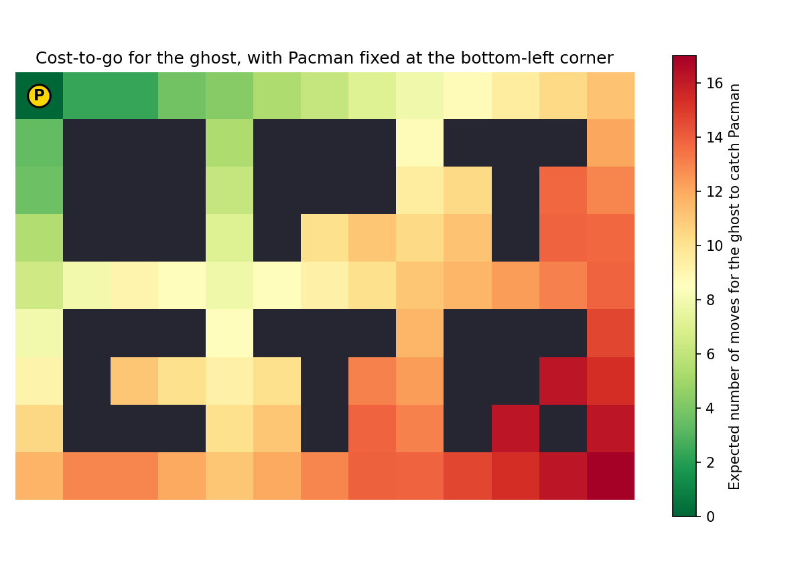
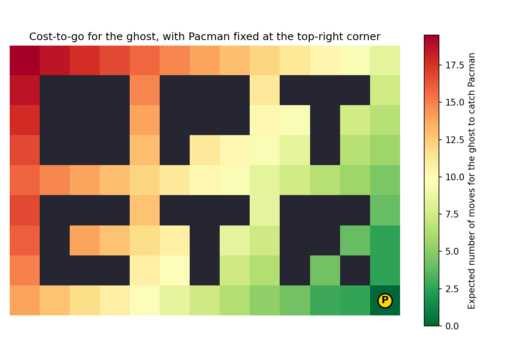

Unit 2 – Stochastic Dynamic Programming and Applications
4SC000 Optimal Control and Reinforcement Learning
Slides · Exercises · Jupyter notebooks
1 Stochastic dynamic programming
In Unit 1, the dynamic programming algorithm was developed for deterministic problems: given a state, an action always leads to a known, predictable next state. In practice, however, the evolution of a system is often affected by disturbances that cannot be predicted in advance. This unit extends the dynamic programming algorithm to problems where such disturbances are present, assuming they can be captured by a stochastic model. It illustrates the resulting stochastic dynamic programming algorithm on several applications.
Two players, \(A\) and \(B\), play the following game. At each of \(h=2\) stages, player \(A\) chooses to toss either a \(1\)€ coin or a \(2\)€ coin: on “heads,” \(A\) gains that many points (and \(B\) loses them); on “tails,” \(A\) loses that many points (and \(B\) gains them). As soon as \(A\)’s point total reaches \(L=3\) or \(L+1=4\), \(A\) wins \(L\) euros from \(B\); if it reaches \(-L\) or \(-(L+1)\), \(A\) pays \(L\) euros to \(B\); otherwise, after both stages, no money changes hands.
Since both coins are fair, it is tempting to think that no strategy can give player \(A\) an edge – any bet has zero expected value on its own. Is that actually true? Play a few rounds below, choosing at each stage which coin to toss, and see how your average payoff compares to zero. We will formalize this game as a stochastic optimal control problem at the end of Section 1.2, and solve it exactly with stochastic dynamic programming at the end of Section 1.3 – with the fully worked-out solution revisited again in Section 2.3.
| Games played | Average profit (€) |
|---|---|
| 0 | -- |
1.1 Introducing disturbances through a motivating example
So far, when disturbances were mentioned at all, we used the policy provided by the dynamic programming algorithm under the assumption of no disturbances to cope with them. Is this procedure optimal in any sense? In general, no. In fact, as the following example shows, in the presence of disturbances it may not even be possible to define an optimal decision in the first place, since the best choice would depend on the future realization of the disturbance – which, by definition, is not yet known when the decision must be made.
Consider moving a robot from an initial stage \(0\) to a final stage \(h\) in minimum time, on the grid shown in Fig. 1.

We first consider a deterministic formulation, and introduce disturbances afterward. If the robot is not stuck against an obstacle or a wall, it can move up, straight, or down: moving straight from stage \(i\) to stage \(i+1\) takes \(1\) time unit, and moving diagonally takes \(\sqrt{2}\) time units. If the robot is stuck against a wall or an obstacle, only one option remains, and an additional penalty of \(c\) time units is paid every time a wall or an obstacle is hit.
This problem can be written in the dynamic programming framework by building a transition diagram directly from these rules, as illustrated in Fig. 2.

Labeling the rows of the grid \(1,\dots,n\) from bottom to top, as shown in Fig. 1, the terminal cost is \(J_h(i)=0\) for every \(i\in\{1,\dots,n\}\), and, for every stage \(k\in\{h-1,h-2,\dots,1,0\}\) moving backward, the cost-to-go satisfies \[J_k(1) = \sqrt{2} + c + J_{k+1}(2), \qquad J_k(n) = \sqrt{2} + c + J_{k+1}(n-1)\] at the two boundary rows (where the robot is forced against a wall), and \[J_k(i) = \min\{1+J_{k+1}(i),\ \sqrt{2}+J_{k+1}(i+1),\ \sqrt{2}+J_{k+1}(i-1)\}\] at every other, non-obstacle row, or \[J_k(i) = 1 + c + J_{k+1}(i), \qquad i \in \{2,\dots,n-1\}\] at an obstacle row, where the robot is forced to keep moving straight through the obstacle.
Fig. 3 shows this recursion worked out numerically, with penalty \(c=4\): the cost-to-go grid on the left, and the resulting optimal policy on the right, obtained by applying the three equations above at every cell and stage.

Now suppose that at a particular position \(A\) – the cell at stage \(5\), row \(9\), right before the free cell between the first two columns of obstacles, with cost-to-go \(8.83\) in Fig. 3 – there might be a disturbance that pushes the robot one extra position down.
Fig. 4 shows the possible outcomes at position \(A\), depending on whether the disturbance occurs (in green) or not (in blue), for each of the three possible decisions.

| decision | no disturbance | disturbance | expected cost | worst-case cost | |
|---|---|---|---|---|---|
| “up” | \(11.4+\sqrt{2}\) | \(7.83+1\) | \((11.4+\sqrt{2})0.8+(7.83+1)0.2=12.02\) | \(11.4+\sqrt{2}\) | |
| “straight” | \(7.83+1\) | \(12.2+\sqrt{2}\) | \((7.83+1)0.8+(12.2+\sqrt{2})0.2=9.79\) | \(12.2+\sqrt{2}\) | |
| “down” | \(12.2+\sqrt{2}\) | \(11.8+\sqrt{5}\) | \((12.2+\sqrt{2})0.8+(11.8+\sqrt{5})0.2=13.69\) | \(11.8+\sqrt{5}\) |
If the future disturbance value were known in advance, the best decision would be “up” if a disturbance were about to occur, and “straight” otherwise. But absent any further assumption on the disturbance, neither decision can be said to be optimal – the best choice depends on information that is simply not available yet. This is the sense in which no optimal decision exists at position \(A\) without further assumptions on the disturbance.
Two assumptions restore a well-defined notion of optimal decision.
Under a stochastic characterization of the disturbances, an optimal policy can be defined as one that minimizes expected cost; the dynamic programming framework extends naturally to provide such a policy, as shown below. Under worst-case disturbances, instead, optimal control problems are tackled within the framework of game theory, a topic not addressed in this course.
Returning to the toy robot problem, suppose the disturbance at position \(A\) is stochastic, with \(\text{Prob}[\text{disturbance}]=0.2\) and \(\text{Prob}[\text{no disturbance}]=0.8\). Weighting each outcome in Table 1 by its probability gives the expected cost shown in the table’s fifth column. The optimal decision is now well-defined: pick “straight,” which minimizes the expected cost.
Alternatively, weighting each outcome by its worst case rather than its probability gives the worst-case cost shown in the table’s last column. Here too the optimal decision is well-defined: pick “up,” the safe choice that guarantees a cost of at most \(11.4+\sqrt{2}\) no matter what the disturbance turns out to be.
1.2 The stochastic optimal control problem
Under a stochastic characterization of disturbances, the dynamic model and cost take the form \[x_{k+1} = f_k(x_k, u_k, w_k), \qquad \sum_{k=0}^{h-1} g_k(x_k, u_k, w_k) + g_h(x_h),\] where the state and action still live in the same finite spaces as before, and the disturbance belongs to a finite set \(w_k \in W_k(i,j) := \{1,\dots,\omega_{i,j,k}\}\) whenever \(x_k=i\) and \(u_k=j\), characterized by the probabilities \[p_\ell^{k,i,j} := \text{Prob}[w_k = \ell \mid x_k=i,\, u_k=j], \qquad \ell \in W_k(i,j).\] Both the state and the cost are now random variables. This model is commonly referred to as a Markov Decision Process (MDP).
Given a policy \(\pi=\{\mu_0,\dots,\mu_{h-1}\}\), with \(u_k=\mu_k(x_k)\), so that \(x_{k+1}=f_k(x_k,\mu_k(x_k),w_k)\), define the expected cost \[J_\pi(x_0) = \mathbb{E}\Big[\sum_{k=0}^{h-1} g_k(x_k,\mu_k(x_k),w_k) + g_h(x_h)\Big],\] a real number for each initial condition \(x_0\). The goal is to find a policy that minimizes \(J_\pi\).
Formulate the robot planning problem in Section 1.1 in the nomenclature just introduced in the present section.
The state \(x_k=i\in\{1,\dots,n\}\) is the row occupied by the robot at stage \(k\), and the action \(u_k=j\in U_k(i)=\{\text{up},\text{straight},\text{down}\}\) is the robot’s decision at that row (a singleton when the row is a wall or obstacle row, since only one move is then possible).
Disturbances only enter at position \(A\), i.e. at stage \(k=5\), row \(i=9\): for every decision \(j\) available there, \[W_5(9,j) = \{0,1\}, \qquad p_0^{5,9,j}=0.8, \qquad p_1^{5,9,j}=0.2,\] where \(w_k=0\) means “no disturbance” and \(w_k=1\) means “disturbance.” At every other state and stage there is no disturbance, i.e. \(W_k(i,j)=\{0\}\) with \(p_0^{k,i,j}=1\).
The dynamics \(f_k(i,j,w_k)\) return the nominal row reached by decision \(j\) (row \(i+1\) for “up,” \(i\) for “straight,” \(i-1\) for “down,” or the single forced row at a wall or obstacle), shifted one further row down whenever \(w_k=1\). The cost \(g_k(i,j,w_k)\) is the cost of the move actually realized: \(1\) for a straight move, \(\sqrt{2}\) for a diagonal move, plus the penalty \(c\) whenever the realized move is forced by a wall or obstacle. The terminal cost is \(g_h(i)=0\) for every row \(i\in\{1,\dots,n\}\).
Formulate the coin-tossing game from the teaser at the start of this unit, with \(h=2\) stages and \(L=3\), in the nomenclature just introduced in the present section.
Let \(x_k\) be player \(A\)’s point total after \(k\) tosses, \(u_k\in\{1,2\}\) the coin chosen at stage \(k\) (worth \(u_k\) euros), and \(w_k\in\{-1,1\}\) the outcome of that toss (tails or heads), for \(k\in\{0,1\}\), with \[\text{Prob}[w_k=1] = \text{Prob}[w_k=-1] = \tfrac12,\] independently of \(x_k\) and \(u_k\). Once the game is already decided, i.e. once \(x_k\in\{-4,-3,3,4\}\), no further toss changes \(x_k\). The dynamic model is therefore \[ f_k(x_k,u_k,w_k) = \begin{cases} x_k + u_k w_k & x_k \notin \{-4,-3,3,4\}\\ x_k & x_k \in \{-4,-3,3,4\}. \end{cases} \] No cost is incurred along the way, \(g_k(x_k,u_k,w_k)=0\); the terminal cost, at \(h=2\), is \[ g_2(x_2) = \begin{cases} -3 & x_2 \in \{3,4\}\\ 3 & x_2 \in \{-3,-4\}\\ 0 & \text{otherwise}, \end{cases} \] negative whenever the final score is a profit for \(A\), since the framework minimizes cost while \(A\) wants to maximize profit.
1.3 The stochastic dynamic programming algorithm
The dynamic programming algorithm extends to this stochastic setting as follows. Initialize \(J_h(i)=g_h(i)\) for every state \(i\), and then, for each decision stage starting from the last and moving backward, \(k\in\{h-1,h-2,\dots,0\}\), compute \[J_k(i) = \min_{j \in U_k(i)} \sum_{\ell \in W_k(i,j)} p_\ell^{k,i,j} \Big(g_k(i,j,\ell) + J_{k+1}\big(f_k(i,j,\ell)\big)\Big),\] together with \(\mu_k(i)=j\), where \(j\) is a minimizer above. Then \(\{\mu_0,\dots,\mu_{h-1}\}\) is an optimal policy. Equivalently, the same recursion can be written as \[J_k(x_k) = \min_{u_k \in U_k(x_k)} \; \mathbb{E}_{w_k}\Big[g_k(x_k,u_k,w_k) + J_{k+1}\big(f_k(x_k,u_k,w_k)\big)\Big].\]
Each function \(J_\ell(i)\) is now the expected cost-to-go when \(x_\ell=i\), \[J_\ell(i) = \mathbb{E}\Big[\sum_{k=\ell}^{h-1} g_k(x_k,\mu_k(x_k),w_k) + g_h(x_h)\Big],\] often also written as \(J_\ell(i) = \mathbb{E}\big[\sum_{k=\ell}^{h-1} g_k(x_k,\mu_k(x_k),w_k) + g_h(x_h) \mid x_\ell=i\big]\); in particular, \(J_0(i)\) is the expected optimal cost for initial condition \(x_0=i\).
The name “Markov Decision Process” comes from the fact that the dynamic model has the so-called Markov property: intuitively, the probability that the process moves to a new state depends only on the current state and action, and, given these, the next state is conditionally independent of all previous states and actions. Formally, for any function \(f\), \[\mathbb{E}[f(x_{k+1}) \mid x_k, u_k, x_{k-1}, u_{k-1}, \dots, x_0, u_0] = \mathbb{E}[f(x_{k+1}) \mid x_k, u_k],\] a property that follows directly from the definition of the dynamic model above.
Using the dynamic model found in the previous exercise, apply the stochastic dynamic programming algorithm to the coin-tossing game and determine whether player \(A\) can profit in expectation and, if so, by how much.
Initialize \(J_2(x_2)=g_2(x_2)\) as given in the previous exercise, and, for \(k\in\{1,0\}\), apply \[ J_k(x_k) = \begin{cases} \displaystyle\min_{u_k\in\{1,2\}} \frac{J_{k+1}(x_k+u_k) + J_{k+1}(x_k-u_k)}{2} & x_k \notin \{-4,-3,3,4\}\\[6pt] J_{k+1}(x_k) & x_k \in \{-4,-3,3,4\}. \end{cases} \] Iterating this recursion backward from \(J_2\) produces the costs-to-go and optimal decisions shown in Fig. 21 in Section 2.3. In particular, \(J_0(0)=-3/4\), so choosing at each stage the coin prescribed by this optimal policy lets player \(A\) profit \(3/4\) euros in expectation – even though every individual coin toss is fair. See Section 2.3 for the full costs-to-go table and optimal policy.
1.4 A stochastic version of the robot-grid example
Return to the deterministic robot-grid problem introduced earlier (Fig. 1), but now suppose that, at every regular (non-obstacle) state and stage, the evolution of the state is stochastic.
Fig. 5 shows the resulting transition probabilities: attempting to move up succeeds with probability \(1-2p\), but results in a straight move with probability \(2p\); attempting to move straight succeeds with probability \(1-2p\), but results in a move up or down, each with probability \(p\); and attempting to move down succeeds with probability \(1-2p\), but results in a straight move with probability \(2p\).

The boundary and obstacle equations are unaffected by the disturbance (a wall or obstacle still forces the same move, deterministically, as in Fig. 1): \[J_k(1) = \sqrt{2}+c+J_{k+1}(2), \qquad J_k(n) = \sqrt{2}+c+J_{k+1}(n-1), \qquad J_h(i)=0,\] \[J_k(i) = 1+c+J_{k+1}(i), \qquad \text{(obstacle)}, \; i \in \{2,\dots,n-1\},\] but at every other state the cost-to-go now averages over the three possible outcomes of each action: \[ \begin{aligned} J_k(i) = \min\Big\{\ &(1-2p)\big(1+J_{k+1}(i)\big) + p\big(\sqrt{2}+J_{k+1}(i+1)\big) + p\big(\sqrt{2}+J_{k+1}(i-1)\big), \\ &2p\big(1+J_{k+1}(i)\big) + (1-2p)\big(\sqrt{2}+J_{k+1}(i+1)\big), \\ &2p\big(1+J_{k+1}(i)\big) + (1-2p)\big(\sqrt{2}+J_{k+1}(i-1)\big)\ \Big\}, \qquad i \in \{2,\dots,n-1\}, \end{aligned} \] matching, term by term, the “straight,” “up,” and “down” actions of Fig. 5. Compare with the deterministic recursion obtained earlier for the same non-obstacle rows, \(J_k(i) = \min\{1+J_{k+1}(i),\ \sqrt{2}+J_{k+1}(i+1),\ \sqrt{2}+J_{k+1}(i-1)\}\): as \(p\to 0\), the stochastic recursion reduces exactly to the deterministic one.


The resulting optimal policy (Fig. 6 (b), b), compared with the deterministic one obtained earlier for the same grid (Fig. 3, right), is quite intuitive: it steers well clear of the obstacles rather than hugging them closely, since a move adjacent to an obstacle now carries some probability of being pushed into it.
1.5 Coping with disturbances in practice
Three strategies can be followed once disturbances are present. The first, open loop, applies the control inputs of a single precomputed optimal path and ignores any disturbance realized along the way; this may not make sense at all, and can lead to poor performance or even instability. The second follows the feedback policy obtained from the deterministic dynamic programming algorithm, simply neglecting disturbances; this is often the strategy followed in practice, especially in engineering contexts, owing to the difficulty of obtaining a reliable stochastic characterization of the disturbances – later in the course this will be called certainty-equivalent control. The third follows the feedback policy obtained from the dynamic programming algorithm for the full stochastic model; this is important in operations research problems, games, and similar settings, but sees more limited use in practical control applications, again because a stochastic model of the disturbances is often hard to obtain.
The three strategies can be compared numerically on the same robot-grid instance and the same disturbance realizations.
Under the open-loop strategy, the optimal decisions are first computed for a given initial state assuming no disturbances (predicted cost \(13.8\)), and then blindly applied regardless of what actually happens: the perturbed path shown in Fig. 7 has a realized cost of \(26.66\), and the average cost over \(1000\) perturbed paths is \(22.04\) (open-loop decisions are applied only at regular cells; at obstacle and wall cells the option is unique regardless).


Under the closed-loop, deterministic-DP strategy, the optimal policy assuming no disturbances is computed once, but the decision is re-made online at every stage based on the state actually observed: the perturbed path in Fig. 8 has a realized cost of \(19.07\), and the average cost over \(1000\) perturbed paths is \(17.51\) – already a marked improvement over open loop.


Finally, under the closed-loop, stochastic-DP strategy, the optimal policy accounting for disturbances is computed once, and again re-decided online at every stage: the perturbed path in Fig. 9 has a realized cost of \(15.48\), and the average cost over \(1000\) perturbed paths is \(15.96\) – the best of the three strategies.


1.6 An equivalent formulation using transition probabilities
It is often more convenient to specify the dynamic model \(x_{k+1}=f_k(x_k,u_k,w_k)\) directly in terms of transition probabilities, \[[P_k(j)]_{ri} = \text{Prob}[x_{k+1}=r \mid x_k=i,\, u_k=j],\] rather than through an explicit function \(f_k\) and disturbance \(w_k\). For example, suppose \[x_{k+1} = \min\{\max\{x_k+u_k+w_k,\,1\},\,c_k\}, \qquad c_k = \begin{cases}2 & k \text{ odd}\\3 & k \text{ even}\end{cases},\] with \(u_k\in\{1,2\}\), \(\text{Prob}[w_k=0]=2/3\), and \(\text{Prob}[w_k=-1]=1/3\). Then, for odd \(k\), \[P_k(1) = \begin{bmatrix}1/3 & 1\\2/3 & 0\end{bmatrix}, \qquad P_k(2) = \begin{bmatrix}0 & 0\\1 & 1\end{bmatrix},\] and for even \(k\), \[P_k(1) = \begin{bmatrix}1/3 & 0 & 0\\2/3 & 1/3 & 0\\0 & 2/3 & 1\end{bmatrix}, \qquad P_k(2) = \begin{bmatrix}0 & 0 & 0\\1/3 & 0 & 0\\2/3 & 1 & 0\end{bmatrix}.\]
Conversely, given a set of transition probabilities, a trivial dynamic model reproducing them can always be constructed by taking \(w_k\) to be the next state itself, \(x_{k+1}=w_k\), with \(\text{Prob}[w_k=j \mid x_k=i,\, u_k=\ell] = P_{ji}(\ell)\). If the running cost depends only on state and action it is unchanged; if it also depends on the disturbance, it is replaced by \[\sum_{k=0}^{h-1} \mathbb{E}\big[g_k(x_k,u_k,w_k)+g_h(x_h)\big] \;\longrightarrow\; \sum_{k=0}^{h-1} \mathbb{E}\big[\tilde{g}(x_k,u_k)+g_h(x_h)\big], \qquad \tilde{g}(i,u) = \sum_j P_{ji}(u)\, g_k(i,u,j).\] In this formulation, the dynamic programming equations read \[J_k(i) = \min_u \; \tilde{g}(i,u) + \sum_j P_{ji}(u) J_{k+1}(j), \qquad J_h(i) = g_h(i),\] for every state \(i\).
The stochastic dynamic programming algorithm can be applied to the inventory control example of Unit 1, now with uncertain demand at stage \(2\): \(\text{Prob}[d_2=0]=0.5\), \(\text{Prob}[d_2=1]=0.5\). Fig. 10 shows the resulting cost-to-go and decisions across all four stages.

Since there is only a single disturbance realization affecting stage \(2\)’s transitions, the costs-to-go at stage \(3\) coincide with those already obtained in the deterministic case of Unit 1. The decisions at stage \(2\) are the ones minimizing the expected cost-to-go: for state \(0\), decision \(u_2=1\) is better than \(u_2=2\), and is in fact optimal. Fig. 11 works out, for state \(x_2=2\), the expected cost-to-go under each of the three possible decisions.

At stages \(0\) and \(1\) there is no uncertainty, so the corresponding costs-to-go are obtained by applying the ordinary dynamic programming algorithm, using the expected costs-to-go already computed at stage \(2\) as the terminal values for that part of the recursion.
2 Applications
Stochastic dynamic programming has a large number of applications in management, finance, games, operations research, and other areas requiring decisions under uncertainty. This section focuses on two of them: optimal stopping problems, where at every stage one must decide either to stop or to continue a given process, possibly at a cost – one of the simplest applications of the framework – and planning under uncertainty, illustrated by the problem of spending a day at Efteling.
Below is a small playable version of the car parking problem described next, with the same \(\alpha=0.8\), search cost \(c=1\) minute per block, and cinema-queue cost \(C=3\) minutes used later in Fig. 14 – except here you get to pick how many blocks away the search starts. Your car (red) drives down the lane; below it, the row of parking bays shows only whether each bay is empty or has a car in it, revealed one bay at a time as you reach it, just as in Fig. 12. At an empty bay, decide whether to park (game over, you lose \(c\cdot d\) minutes for parking \(d\) blocks away) or keep driving toward the cinema; if a bay is occupied, parking is simply not an option there. If you never park, you pay the \(C\)-minute queue cost at the cinema instead. Try a few rounds yourself in “Manual” mode, then switch to “Optimal stopping (stochastic DP)” to watch the policy computed by the recursion below play instead, and compare your average delay to its average delay over many games.
| Mode | Games | Avg. delay (min) |
|---|---|---|
| Manual | 0 | -- |
| Stochastic DP | 0 | -- |
2.1 The car parking problem
Juliet is taking her boyfriend Romeo to watch a movie at a crowded local cinema. They are running late and need to find a parking place (Fig. 12). If they park \(k\in\{1,\dots,h\}\) places away from the cinema, they lose \(ck\) minutes of the movie; each parking place is free with probability \(p_k=1-\alpha^k\), for some \(0<\alpha<1\); and if they reach the cinema without having parked, they must wait in the cinema’s parking queue, which typically takes about \(C\) minutes. When should they park – that is, stop searching – so as to minimize their expected delay?

Let \(h\) be the number of parking places, with stage \(\ell\in\{0,1,\dots,h-1\}\) corresponding to distance \(k=h-\ell\) from the cinema. The state \(x_\ell\in\{F,S,O\}\) records whether parking spot \(\ell\) is free (\(F\)), occupied (\(O\)), or the car is already parked (\(S\)), with terminal state \(x_h=E\). When \(x_\ell=F\), the action is \(u\in\{P,DP\}\): park (\(P\), cost \(ck\)) or don’t park (\(DP\), cost \(0\)); when \(x_\ell=O\), the only available action is \(u_\ell=DP\). If \(u_\ell=DP\), then \(x_{\ell+1}=F\) with probability \(1-\alpha^{h-(\ell+1)}\) and \(x_{\ell+1}=O\) with probability \(\alpha^{h-(\ell+1)}\). If the decision is still not to park at the very last stage, a cost of \(C\) is incurred instead. Fig. 13 shows the resulting transition diagram.

Writing \(p_k=1-\alpha^k\) and \(q_k=\alpha^k\), the dynamic programming recursion is worked out stage by stage, starting from \(J_h(E)=0\) and \(J_{h-1}(O)=C\), \(J_{h-1}(F)=\min\{C,c\}\), then \[J_{h-2}(O) = p_1 J_{h-1}(F) + q_1 J_{h-1}(O) = p_1\min\{C,c\}+q_1 C, \qquad J_{h-2}(F) = \min\{p_1 J_{h-1}(F) + q_1 J_{h-1}(O),\, 2c\},\] and, in general, at stage \(h-(k+1)\), \[J_{h-(k+1)}(O) = p_k J_{h-k}(F) + q_k J_{h-k}(O), \qquad J_{h-(k+1)}(F) = \min\{p_k J_{h-k}(F) + q_k J_{h-k}(O),\, c(k+1)\}.\]
Fig. 14 works out a numerical instance with \(\alpha=0.8\), \(h=4\), \(C=3\), \(c=1\). The resulting rule is simple and intuitive: park if there is a free parking place at distance one or two from the cinema, and otherwise keep searching.

A closely related stopping-time problem is deciding when to accept an offer for an asset – a house, say – so as to maximize the expected revenue at the end of a fixed horizon (Fig. 15).

Suppose independent offers \(w_0,w_1,\dots,w_{N-1}\) arrive over \(N\) periods, taking values in a finite set \(w_k\in\{a_1,\dots,a_M\}\) with \(\text{Prob}[w_k=a_i]=p_i\) (\(w_k=0\) models the case of no offer in period \(k\)); that an accepted offer is invested at rate \(r\) until period \(N\); and that rejected offers are not renewed, while the last offer \(w_{N-1}\) must be accepted if nothing has been accepted before.
Let \(x_k\), for \(k\geq 1\), be the most recent offer \(w_{k-1}\), with a terminal state \(x_k=T\) once the asset has been sold, let \(u_k=1\) denote accepting offer \(w_{k-1}\) at time \(k\geq 1\), and set \(x_0:=0\). Then \[x_{k+1} = \begin{cases}T & \text{if } x_k=T,\ \text{or } x_k\neq T \text{ and } u_k=1 \text{ (sell)},\\w_k & \text{otherwise},\end{cases}\] and the expected selling price is \[\mathbb{E}_{w_k}\Big[g_N(x_N) + \sum_{k=0}^{N-1} g_k(x_k,u_k,w_k)\Big],\] with \[g_k(x_k,u_k,w_k) = \begin{cases}(1+r)^{N-k}x_k & \text{if } x_k\neq T \text{ and } u_k=1 \text{ (sell)}\\0 & \text{otherwise},\end{cases} \qquad g_N(x_N) = \begin{cases}x_N & \text{if } x_N\neq T\\0 & \text{if } x_N=T.\end{cases}\]
Applying the dynamic programming algorithm, \[J_N(x_N) = \begin{cases}x_N & \text{if } x_N\neq T\\0 & \text{if } x_N=T,\end{cases} \qquad J_k(x_k) = \begin{cases}\max\big[(1+r)^{N-k}x_k,\ \mathbb{E}[J_{k+1}(w_k)]\big] & \text{if } x_k\neq T\\0 & \text{if } x_k=T,\end{cases}\] which translates into a threshold policy: accept the offer \(x_k\) if \(x_k>\alpha_k\), and reject it if \(x_k\leq\alpha_k\), where \[\alpha_k = \mathbb{E}[J_{k+1}(w_k)] = \frac{\sum_{i=1}^M p_i J_{k+1}(a_i)}{(1+r)^{N-k}}.\]
2.2 Planning a day at Efteling
A different flavor of application is planning under uncertainty: how should an afternoon at the Efteling amusement park be planned so as to maximize the additive reward collected from one’s favorite attractions, given a stochastic model of the queueing times (Fig. 16)?

The visit is planned over the period from 14:00 to 19:00, divided into \(T=60\) time slots of \(5\) minutes each, from \(k=1\) (14:00-14:05) to \(k=T=60\) (18:55-19:00). The walking time between any two attractions – and to and from the entrance/exit, treated as an \(11\)th location – is deterministic and given in Fig. 17; a visitor never wishes to visit the same attraction more than once.

Suppose the waiting-time distribution at each attraction is known as a function of time of day (Fig. 18). The state is then taken to be a triple: a unique label \(a_M a_{M-1}\cdots a_2 a_1\), with \(a_i\in\{0,1\}\), recording which attractions have been visited so far; the current time index; and the last attraction visited, \(c\in\{1,\dots,M\}\) (with \(a_c=1\)). The goal is a policy that, for every state, prescribes the next attraction to visit.

There is a subtlety here that does not arise in the earlier examples in this unit: the number of attractions visited is itself variable (a visitor may see anywhere from \(0\) to \(M\) of them), so there is no fixed number of decisions to index the stages by. The fix is to let the DP stage be the time index \(k\) itself, rather than the count of attractions visited so far: the state at stage \(k\) records the current time, the current location, and the attractions visited so far, and the terminal stage is simply \(k=T\), the fixed closing time. The price to pay is that this departs from the recursion used earlier in the unit, where every action advances the stage by exactly one: here, visiting an attraction advances the state from stage \(k\) directly to stage \(k+c_i>k+1\) (skipping every intermediate time index), where \(c_i\) is the (random) time to walk to and experience attraction \(i\); only the “exit” action, or simply waiting, would advance \(k\) by one at a time. The backward recursion still runs from stage \(T\) down to stage \(1\) exactly as before, just with these longer, state-dependent jumps. The terminal cost is \(g_T(x_T)=\infty\) if \(x_T\) is infeasible, and \(g_T(x_T)=0\) if it is feasible, where a state is feasible whenever, given the last attraction visited and the current time, there is still enough time left to exit the park (Fig. 19); intuitively, at the terminal stage \(T\) a visitor is assumed to exit the park even if time remains.

Because infeasible states carry cost \(\infty\), and this propagates backward through the expectation in the DP recursion, the optimal policy automatically avoids any action that has even a small probability of stranding the visitor in the park – so a visitor following the optimal policy is guaranteed to exit the park before closing time with probability one, even though the individual waiting times are random.
Fig. 20 illustrates one step of the resulting transition diagram: from a given state, the possible actions are to visit any not-yet-visited attraction, each leading to a new state at stage \(k+c_i\), with an arrow cost equal to minus the reward of the attraction just visited (since the framework minimizes cost, while the visitor’s true objective is to maximize reward).

After setting up the problem in this way, running the dynamic programming algorithm produces the optimal policy – provided the horizon \(T\) is taken long enough, in which case both the costs-to-go and the policy can be shown to converge (a fact justified later in the course). For instance, from the state \((1111100000,\, 25,\, 2)\), the optimal policy might prescribe moving next to attraction \(10\).
Below is a playable, simplified version of the planning problem above, using the same \(11\) locations and walking times as Fig. 17, and the same shape of time-varying waiting-time distribution as Fig. 18, applied here to every attraction for simplicity (in reality different attractions would have different distributions). Set your own preference for each attraction below (the defaults are Duarte’s own, from Fig. 16), then click “New game” to start touring the park from the entrance at 14:00. At each step, click any attraction you have not visited yet and can still reach in time; the walking time is known in advance, but you only find out how long the wait once you arrive there, exactly as in the model above. You can leave the park at any time by clicking “Exit park now,” and the game leaves for you automatically if time runs out. Try a few rounds in “Manual” mode, then switch to “Optimal (stochastic DP)” to watch the policy obtained by solving the recursion above – for your own preferences – play instead, and compare your total reward to its average.
| # | Attraction | Preference (1-5) |
|---|
| # | Attraction | ★ | Travel | Status |
|---|

| Mode | Games | Avg. total reward |
|---|---|---|
| Manual | 0 | -- |
| Stochastic DP | 0 | -- |
2.3 Other applications
Stochastic dynamic programming has also been used in student projects supervised at TU/e. Autonomous Parking Spot Ranking, by Jeroen Vanhegelsom (2022), was developed at the company Lightyear in Eindhoven, and uses stochastic dynamic programming to plan dynamic parking strategies for solar-powered cars so as to optimize their sun exposure. Optimal planning strategies balancing sensing and acting under uncertainty and partial observability, by Femke Voogt (2026), was developed at the company VBTI in Eindhoven, and uses stochastic dynamic programming to plan leaf harvesting.
We close by returning, with full detail, to the coin-tossing game introduced as a teaser at the start of this unit and already formulated and solved piece by piece in the exercises of Sections 1.2 and 1.3.
Two players, \(A\) and \(B\), repeatedly play two fair games. Player \(A\) tosses a coin worth \(1\) money unit: on “heads” he gains \(1\) point (and \(B\) loses \(1\) point), otherwise he loses \(1\) point (and \(B\) gains \(1\) point). Alternatively, player \(A\) tosses a coin worth \(2\) money units, gaining or losing \(2\) points on the same terms. The game ends as soon as one of the players reaches \(L\) or \(L+1\) points, in which case that player receives \(L\) money units from the other; if neither player reaches \(L\) points within \(h\) stages, the game ends with no payment. Suppose \(h=2\), \(L=3\), and both players start with zero points. Can player \(A\) gain money in expectation by choosing, at each stage, which coin to toss?
Let the dynamic model be \(x_{k+1}=f(x_k,u_k,w_k)\), where \(x_k\) is player \(A\)’s point total, \(u_k\in\{1,2\}\) is the coin chosen, and \(w_k\in\{-1,1\}\) encodes tails (\(-1\)) or heads (\(1\)), for \(k\in\{0,\dots,h-1\}\): \[ f(x_k,u_k,w_k) = \begin{cases} x_k+1 & u_k=1,\ w_k=1\\ x_k+2 & u_k=2,\ w_k=1\\ x_k-1 & u_k=1,\ w_k=-1\\ x_k-2 & u_k=2,\ w_k=-1\\ x_k & x_k \in \{L,L+1,-L,-(L+1)\} \text{ (game already over, wait for the last stage)}. \end{cases} \] With cost \(\min \sum_{k=0}^{h-1} g(x_k,u_k) + g_h(x_h)\), where \(g(x_k,u_k)=0\) for every \(x_k,u_k\) and \[g_h(x_h) = \begin{cases}-L & x_h=L \text{ or } x_h=L+1\\L & x_h=-L \text{ or } x_h=-(L+1)\\0 & \text{otherwise}\end{cases}\] (so that profit equals minus cost), the dynamic programming algorithm gives \(J_h(x_h)=g_h(x_h)\) and, for \(k\in\{h-1,\dots,0\}\), \[J_k(x_k) = \min_{u_k} \mathbb{E}\big[g(x_k,u_k) + J_{k+1}(x_{k+1}) \mid x_k\big],\] which, using the expression for \(f\) above, becomes \[ J_k(x_k) = \begin{cases} \min\Big\{\dfrac{J_{k+1}(x_k+1)+J_{k+1}(x_k-1)}{2},\ \dfrac{J_{k+1}(x_k+2)+J_{k+1}(x_k-2)}{2}\Big\} & \text{otherwise}\\[4pt] J_{k+1}(x_k) & x_k \in \{-(L+1),-L,L,L+1\}. \end{cases} \]
Iterating this recursion produces the costs-to-go and optimal decisions shown in Fig. 21 (circles are states, labeled with the number of points at a given stage; the cost-to-go is shown above each circle, and the optimal decision next to it). For the zero initial condition, the optimal expected cost is \(-3/4\), so player \(A\)’s expected profit is \(3/4\): yes, a suitably chosen coin-tossing strategy lets player \(A\) profit in expectation.

Recall the Pacman maze from Unit 1. There, the ghost chased Pacman using a shortest-path policy, and you controlled Pacman yourself. Here the roles are different: Pacman now moves on its own, according to a fixed stochastic policy – at every step, it tries to move right, but only succeeds with probability \(0.5\); the rest of the time it moves to one of its other available neighboring cells, chosen uniformly at random (and if moving right is not possible at all, Pacman picks uniformly among all its neighbors). You control the ghost, and the goal is to catch Pacman in as few moves as possible.
How well can you do? Fig. 22 shows, for two fixed Pacman positions, the expected number of moves the optimal ghost policy needs to catch Pacman from every possible ghost starting position – this is exactly the cost-to-go \(J\) of a stochastic dynamic programming problem whose state is the pair (Pacman’s cell, the ghost’s cell), whose action is the ghost’s next move, and whose per-stage cost is \(1\) for every move until Pacman is caught (a stochastic shortest path problem). The underlying dynamic programming recursion is exactly the one introduced earlier in this unit, just applied to the joint state of both characters rather than to a single robot.


Below, you can play the chasing game yourself in “Manual” mode using the arrow keys, or watch the optimal stochastic-DP policy play in “Stochastic DP” mode (the same policy used to produce the figure above). Switching modes starts a new game. Every time Pacman is caught, the number of moves it took is recorded below, separately for each mode, so you can compare your own average performance against the optimal policy’s – since the policy is optimal for this exact problem, you should not be able to beat it on average, even though you might get lucky on any single game.
| Mode | Games | Avg. moves to catch |
|---|---|---|
| Manual | 0 | -- |
| Stochastic DP | 0 | -- |
As a last, very different-looking example, consider a simplified version of blackjack. The player and the dealer are each dealt two cards from a deck where every card is drawn independently and uniformly from the \(13\) ranks \(\{\text{A},2,3,\dots,9,10,\text{J},\text{Q},\text{K}\}\) (an “infinite deck,” equivalent to drawing with replacement, so unlike a real deck the probabilities never change as cards are removed); \(2\) through \(9\) count at face value, \(10\), \(\text{J}\), \(\text{Q}\), and \(\text{K}\) all count as \(10\), and an ace counts as either \(1\) or \(11\), whichever is more favorable without causing the hand to exceed \(21\) (“busting”). Only one of the dealer’s two cards is shown to the player. The player then repeatedly chooses to hit (take another card) or stand (stop); if the player’s total exceeds \(21\), the player immediately loses. Once the player stands, the dealer reveals the hidden card and hits, by a fixed rule, as long as the dealer’s total is below \(17\), then stands; if the dealer busts, the player wins, otherwise whoever has the higher total wins, and equal totals push. If either player or dealer is dealt a natural (\(21\) on the first two cards), the hand ends immediately: a natural beats any non-natural total, and two naturals push. Winning pays \(+1\), losing pays \(-1\), and a push pays \(0\); for simplicity, this version has no bet sizing, doubling down, splitting pairs, insurance, or bonus payout for a natural, and the dealer always stands on every \(17\) (including a “soft” \(17\) with a usable ace).
This looks nothing like the earlier examples in this unit, yet it fits the same framework, using the same trick introduced for the Efteling example: the DP stage is not a fixed decision count, but a quantity that only ever moves in one direction along the way to a natural stopping point. Here, the player’s hand total \(x_k\in\{2,\dots,21\}\) plays that role, since every hit strictly increases it (never decreases or repeats a value); the state is the pair \((x_k, a_k)\), where \(a_k\in\{0,1\}\) records whether the hand currently has a usable ace (one still counted as \(11\)), together with the dealer’s showing card \(d\in\{\text{A},2,\dots,10\}\), which stays fixed throughout the player’s turn; the action is \(u_k\in\{\text{hit},\text{stand}\}\); hitting draws a card \(w_k\) from the \(13\)-value distribution above and moves to \(x_{k+1}=x_k+w_k\) (or \(x_k+11\) instead of \(x_k+1\) if an ace is drawn and doing so keeps the total at or below \(21\)), while standing ends the player’s turn. Because \(x_k\) only increases, the backward recursion runs from the largest hand totals down to the smallest, exactly as in every other example in this unit – just with “totals” in place of “time” or “distance to the cinema” as the stage variable.
Solving it exactly takes two steps. First, since the dealer’s play is a fixed, known rule (not a decision), the distribution of the dealer’s final outcome given the showing card \(d\) can be computed by the same kind of backward recursion applied to the dealer’s own hand: if the dealer’s current total is \(17\) or more, the outcome is that total for certain; otherwise, average over the next card exactly as below, recursing on hands with strictly larger totals until they terminate. Doing this once for each dealer card \(d\), and averaging over the unknown hidden card, gives the dealer’s outcome distribution \(p_d(\cdot)\) – a probability over \(\{17,18,19,20,21,\text{bust}\}\) – entirely independently of what the player does.
Second, with \(p_d(\cdot)\) in hand, define \(J(x,a)\) as the player’s expected payoff from state \((x,a)\) onward under the optimal policy. The value of standing is \[ J^{\text{stand}}(x) = \sum_{y\in\{17,\dots,21\}} p_d(y)\,\text{sign}(x-y) + p_d(\text{bust}), \] (win \(+1\), lose \(-1\), push \(0\), using \(\text{sign}(0)=0\)), and the value of hitting is \[ J^{\text{hit}}(x,a) = \sum_{w} \text{Prob}[w]\,\Big(\mathbb{1}[x'>21]\cdot(-1) + \mathbb{1}[x'\leq 21]\cdot J(x',a')\Big), \] where \((x',a')\) is the state obtained by adding card \(w\) to \((x,a)\). Then \[ J(x,a) = \max\{J^{\text{stand}}(x),\ J^{\text{hit}}(x,a)\}, \] with the maximizer giving the optimal action – precisely the dynamic programming equation from earlier in this unit, applied with the hand total as the stage. Solving it (for every dealer card \(d\)) recovers exactly the “basic strategy” tables familiar from blackjack strategy cards: for instance, hit any hard total of \(11\) or less (hitting can never bust from there), and, against a dealer showing \(7\) through ace, keep hitting stiff totals of \(12\) through \(16\), while against a dealer showing \(4\), \(5\), or \(6\), stand on any total of \(12\) or more instead. Even under this optimal policy, however, the game remains unfavorable to the player: averaging over all starting hands, the expected payoff per hand is about \(-0.044\) – the dealer’s structural advantage of acting last cannot be fully undone by playing well, only minimized (and real casino blackjack, which also offers doubling down and splitting, narrows this further, typically down to about \(-0.005\)).
Below, you can play a few hands yourself in “Manual” mode, or let “Optimal (stochastic DP)” play using the policy obtained by solving the recursion above, and compare your own average payoff per hand to its average.
| Mode | Hands | Avg. payoff |
|---|---|---|
| Manual | 0 | -- |
| Stochastic DP | 0 | -- |
In the classic buzz wire game, a metal loop is guided by hand along a bent wire, and a buzzer sounds the moment the loop touches it. Here the loop is instead held by a robot arm, and the goal is to program a policy that moves it from the start to the end of the wire as quickly as possible without ever causing a buzz. The wire lies in a plane and is described by a curve \(y=f(x)\) that never bends back on itself. The loop itself is modeled as two short parallel bars (shown in blue below), a fixed length and gap apart, rigidly attached to a center point \((p_x,p_y)\) at orientation angle \(\theta\in(-\tfrac{\pi}{2},\tfrac{\pi}{2})\); the loop touches the wire whenever either bar crosses it. A configuration counts as valid only while the wire runs between the two bars: the loop is threaded onto the wire, so drifting away from it altogether is a failure in the same way that touching it is, not a safe place to be. Both coordinates and the angle are discretized: \(p_x\in\{1,\dots,N_x\}\), \(p_y\in\{1,\dots,N_y\}\), and \(\theta\) takes one of \(N_\theta\) evenly spaced values in that range. The robot starts at \(p_x=1\), in a configuration that does not touch the wire, and the game ends the moment \(p_x=N_x\) is reached (again without ever touching the wire along the way); the number of steps taken should be as small as possible.
At every stage \(k\), the action is a triple \((u_{x,k},u_{y,k},u_{\theta,k})\) – how far to move forward, how far to nudge vertically, and how far to rotate – bounded by \(u_{x,k}\in\{0,\dots,M_x-1\}\) (forward or standing still, never backward) and \(u_{y,k},u_{\theta,k}\in\{-\tfrac{M_y-1}{2},\dots,\tfrac{M_y-1}{2}\}\), \(\{-\tfrac{M_\theta-1}{2},\dots,\tfrac{M_\theta-1}{2}\}\) (for odd \(M_y,M_\theta\)). In the purely kinematic, deterministic version of the problem, this action is executed exactly: \[ p_{x,k+1} = \text{clip}(p_{x,k}+u_{x,k}), \quad p_{y,k+1} = \text{clip}(p_{y,k}+u_{y,k}), \quad \theta_{k+1} = \text{clip}\Big(\theta_k+\tfrac{\pi}{N_\theta+1}u_{\theta,k}\Big), \] where \(\text{clip}(\cdot)\) saturates each quantity to its allowed range. Every step costs \(1\) (the time taken), touching the wire is forbidden (an infinite cost, exactly like the obstacle cells in the very first robot-grid example of Unit 1), and reaching \(p_x=N_x\) safely costs \(0\) from then on – so this deterministic version is again an ordinary shortest-path problem, solvable by the dynamic programming algorithm (or equivalently, since every step costs the same, by Dijkstra’s algorithm).
In practice, the robot arm cannot execute a commanded move perfectly: Duarte’s original model adds a random disturbance to the position only (the angle is assumed to be executed exactly), \[
p_{x,k+1} = \text{clip}(p_{x,k}+u_{x,k}+d_{x,k}), \qquad
p_{y,k+1} = \text{clip}(p_{y,k}+u_{y,k}+d_{y,k}),
\] with \((d_{x,k},d_{y,k})\) one of \(9\) possible offsets in \(\{-1,0,1\}^2\), each with its own known probability (most likely no disturbance at all, \((0,0)\), with probability \(0.36\); each corner offset only \(0.04\)). Now a touch of the wire can happen by accident, even when the commanded action was perfectly safe – so forbidding it outright (infinite cost) would typically make every state’s cost infinite, since a long enough policy could always eventually get unlucky. Instead, a touch ends the episode immediately and charges a large but finite penalty \(C_W\), exactly as for a real buzzer: annoying, but not catastrophic. The resulting Bellman equation, at every non-terminal, non-colliding state \((p_x,p_y,\theta)\), is \[
J(p_x,p_y,\theta) = \min_{(u_x,u_y,u_\theta)} \; \sum_{(d_x,d_y)} \text{Prob}[(d_x,d_y)] \Big(c(p_x',p_y',\theta') + J(p_x',p_y',\theta')\Big),
\] where \((p_x',p_y',\theta')\) is the resulting next state, and \(c(p_x',p_y',\theta')=C_W\) with \(J\equiv 0\) afterward if that next state touches the wire, \(c=0\) with \(J\equiv 0\) if it safely reaches \(p_x=N_x\), and \(c=1\) otherwise. Because the action can leave \(p_x\) unchanged (\(u_x=0\), useful for re-aligning \(p_y\) or \(\theta\) before pressing on), the stage can no longer be taken to be \(p_x\) itself, unlike in the Efteling or car-parking examples – there is no quantity here that is guaranteed to strictly increase at every step. This is exactly the situation the general form of the dynamic programming algorithm is built for: rather than a single backward sweep, the equation above is applied repeatedly, over and over to every state simultaneously, each time using the previous iteration’s \(J\) on the right-hand side, until \(J\) stops changing. This iterative fixed-point form is what Duarte’s own notebook implements (dpspstoch), and what the game below solves exactly, live, for the wire shape shown.
Below, drive the loop yourself in “Manual” mode using the three controls (how far forward, how far up/down, how much to rotate) and the “Move” button, or let “Optimal (stochastic DP)” drive using the policy obtained by solving the fixed-point equation above; disturbances are applied in both modes, exactly as described. A run ends either in success (reaching the end) or in a buzz (touching the wire, charged the penalty \(C_W\)); the table tracks your average cost per attempt against the DP policy’s.
| Mode | Attempts | Avg. cost |
|---|---|---|
| Manual | 0 | -- |
| Stochastic DP | 0 | -- |
3 Summary
This unit extended the dynamic programming algorithm to problems affected by disturbances. We saw that, without further assumptions, an optimal decision may not even be well-defined in the presence of disturbances, and that a stochastic characterization of the disturbances restores a well-defined notion of optimality, based on minimizing expected cost. We introduced the resulting stochastic dynamic programming algorithm, together with an equivalent formulation based directly on transition probabilities rather than an explicit disturbance model. Two classes of applications illustrated the framework: optimal stopping problems – the car parking problem and, in the appendix, selling an asset – and planning under uncertainty, illustrated by spending a day at Efteling. If a stochastic characterization of the disturbances is available, it can improve, in terms of expected cost, both open-loop policies and the closed-loop policy obtained by dynamic programming under a deterministic assumption.